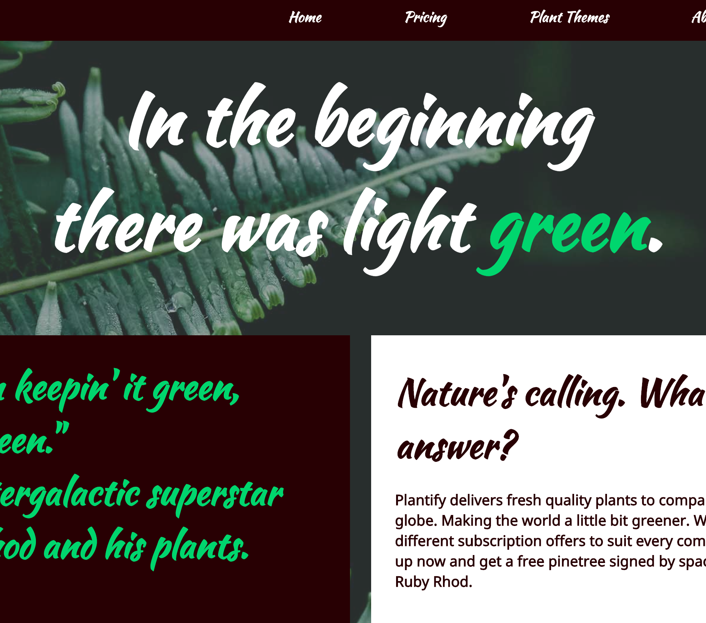

Front-End Utvecklare
Jag studerar Front-End på Nackademins yrkeshögskoleutbildning.
Projekt
Ett projekt med fokus på responsiv HTML/CSS.
Ett projekt med fokus på HTML/CSS.
Ett projekt med fokus på designmönster för Javascript.

Ett projekt med fokus på Javascript.
Mockup till ett nyhetsbrev.
Mockup till ett nyhetsbrev.
En redesign av sf.se.
Ett projekt med fokus på javascript.
Konst och Design


{kind=link}
CV
Utbildning
Nackademin, Front-End Utvecklare
2016-2018.
Konstfack, Institutionen för bildpedagogik
2009-2013, Lärarprogrammet, ämnesinriktning Design och Konst.
Stockholms Universitet
2008, Lärarprogrammet, allmänt utbildningsområde.
Försvarsmakten, I19 Boden Pansarskyttekompaniet
2005-2006, Värnplikt, befattning som förare på stridsfordon 90, eldledningsvagn.
Upplands-Bro Gymnasiet
2003-2005, Naturvetenskapliga programmet.
Behörighet
Lärarlegitimation i följande kurser:
Grundskolan
Bild 1-9
Gymnasieskolan
Bild
Bildteori
Digitalt skapande
Estetisk kommunikation
Fotografisk bild
Grafisk kommunikation
Humanistisk och samhällsvetenskaplig specialisering
Humanistisk och samhällsvetenskaplig spets inom försöksverksamhet med riksrekryterande gymnasial spetsutbildning
Konst och kultur
Mediekommunikation
Medieproduktion
Medier, samhälle och kommunikation
Visuell kommunikation
Erfarenhet
Kymlingeskolan, Sunbyberg
2016-Tillsvidareanställning, Bildlärare i fritidshem och samverkande pedagog.
Örskolan, Sundbyberg
2013-2015, Ämneslärare i bild, förskoleklass samt bildlärare i fritidshem.
Tensta Konsthall
2012, Pedagog på konstkollo.
Ross Tensta gymnasium
2011, Verksamhetsförlagd utbildning där jag undervisade i estetisk verksamhet bild.
Franska Skolan
2008, 2009, 2010, 2011, Verksamhetsförlagd utbilding där jag undervisade i bild.
Nordiska Museet
2011, Jag arbetade som gästpedagog under tre helger med utställningen "Sopor" där besökare fick formge accessoarer av skräp och dylikt.
Coop Logistik AB
2006-2013, Jag arbetade som expeditör på Coops centrallager.